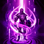

LOLのサモナースペル
以下は、LOLのサモナースペルのリストです。これらのスペルは、ゲームの中で選ぶことができます。

フラッシュ: 短い距離を瞬間移動します。 薄い壁などを越える事もできるため逃げにも攻めにも使える万能なサモナースペルです。 どのレーンでも基本的に持つサモナースペルです。

ゴースト: １５秒間移動速度が増加し、ユニット（ミニオン等）をすり抜けながら移動することができます。

ヒール: 自身と味方チャンピオン１人のHPを回復し、１秒間移動速度が増加します。 主にBOTレーンのどちらかが持つことが多いです。

テレポート: 指定した味方陣営のオブジェクト（タワー等）へワープします。 １４分以降は新テレポートに変わりタワー以外のワードなどにもワープ可能になります。 TOPレーンの人がよく使用しています。 テレポートを完了させるには４秒ほど詠唱時間があります。 詠唱中にCCを受けるとキャンセルされます。

イグナイト: 指定した敵チャンピオンに５秒かけてレベルに応じた確定ダメージと重傷を与えます。 この効果時間の間は相手が草むらに入っても見ることができます。

バリア: 自身のレベルに応じたシールドを付与します。

イグゾースト: 指定した敵チャンピオンにスロウと与えるダメージ減少を与えます。

クレンズ: 自身が受けているCCとイグゾースト、イグナイトを解除します。 使用後３秒間受けるCCの拘束時間を減少させます。